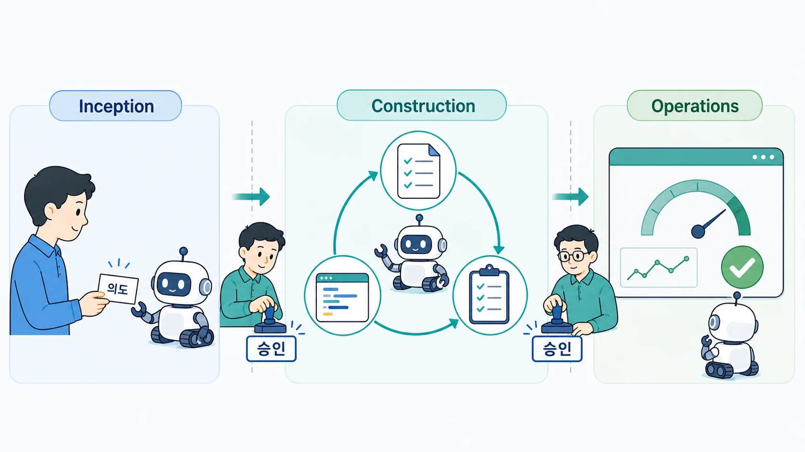
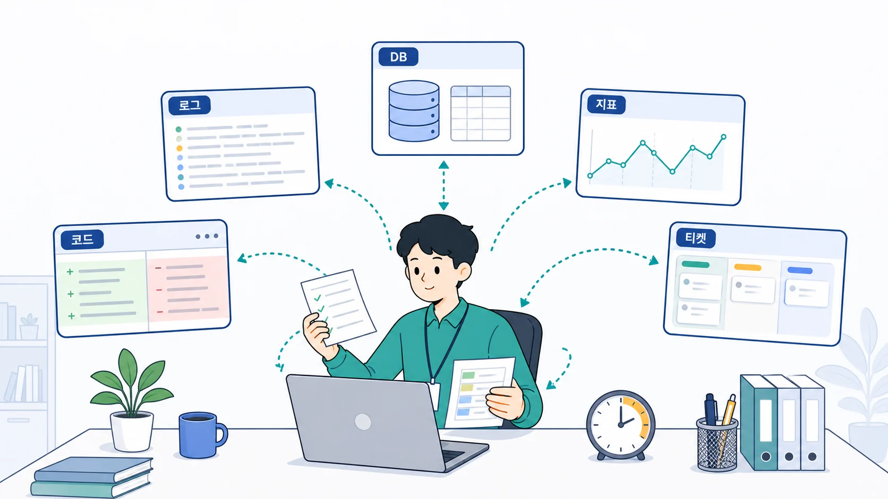
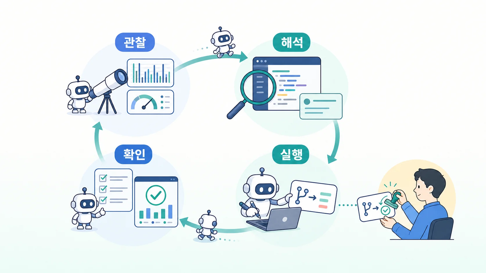
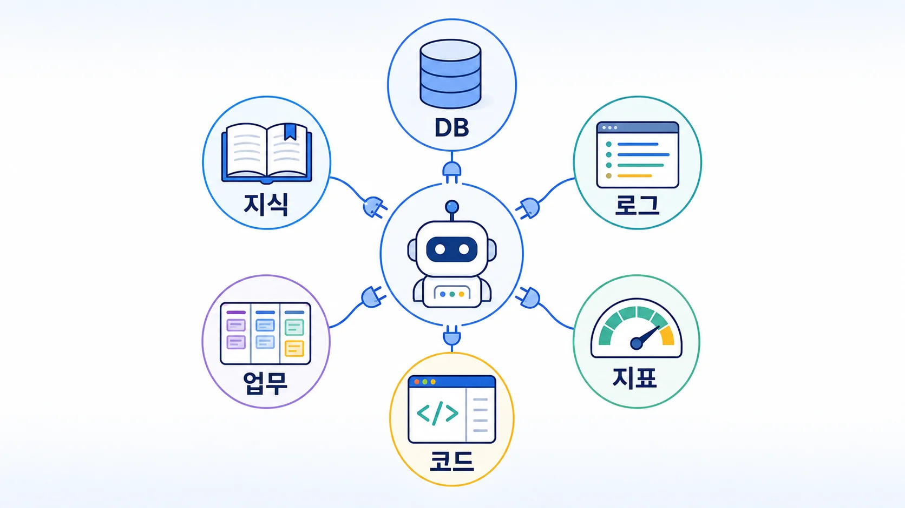
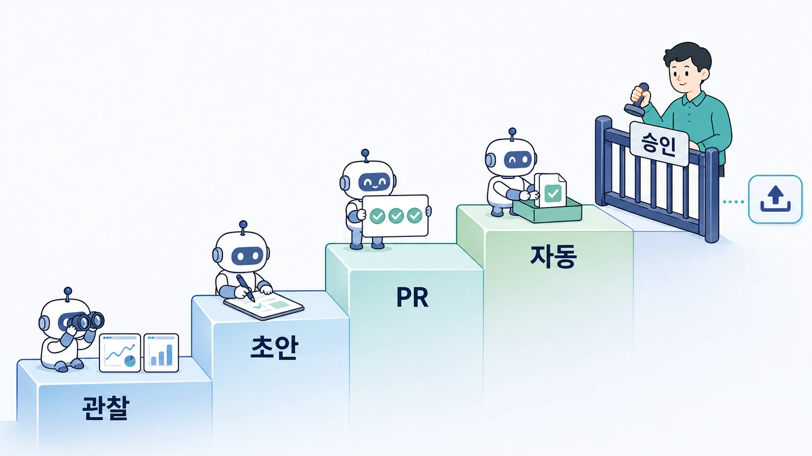

SWDP 개발·운영 내용 공유
SWDP 개발·운영과
AI 에이전트 적용 방향
SWDP 자체 개발·운영 업무의
위임 · 검증 · 통제 구조
2026. 7
이번 논의의 중심은
SWDP 자체의 개발·운영
장애 대응 · 변경 · 검증 업무에 에이전트를 적용하는 방식
적용 범위 — 사용자 지원이 아니라 SWDP 자체
별도 트랙
SWDP 사용자 대상
AI 챗봇 · VOC 지원
이번 자료의 범위 — SWDP 자체 개발·운영에 대한 적용
AI-DLC — AWS가 제안한 AI 기반 개발 협업 방식

계획 · 구현 · 검증은 AI가 수행 — 맥락과 주요 결정은 사람
AI 기반 개발 접근들 — 강조하는 영역이 다르다
협업
AI-DLC · BMAD
역할 · 협업 · 개발 전 과정
스펙
Spec Kit · OpenSpec
지속되는 스펙 · 변경분 기록
맥락
GSD · Kiro
작업 분해 · 컨텍스트 유지
환경
Harness Engineering
도구 · 권한 · 검증 루프
전부 도입이 아니라 — SWDP 목적에 맞는 원칙을 선택
SWDP
개발·운영 구조
현재 프로세스와 주요 운영 업무
SWDP의 개발 절차 — 하나의 프로세스로 연결
SCM
→
빌드
→
품질 검증
→
RC
→
TR
→
QA
→
배포
형상관리부터 배포까지 — 단계와 조건을 관리하는 프로세스 포털
SWDP가 연결하는 핵심 기능
조직
프로젝트 · 멤버 · 역할
프로젝트와 Workspace 운영
형상
저장소 · 브랜치 · 커밋
권한과 변경 이력 연결
빌드
목적별 빌드 실행
Release · Layer · Commit
품질
자동 품질 검증
Coverity · SAM · 코딩룰 · OSS
릴리스
Release Criteria
조건 · 예외 · 승인 이력
배포
TR · IMS · Bamboo
QA 요청부터 배포까지
테스트 요청과 배포 — 서로 다른 단계
RC 통과
→
TR 생성Test · Qual
→
IMS QA
→
PASSED
→
Bamboo 배포
TR은 QA 테스트 요청 — 배포는 통과 뒤의 별도 실행
적용 대상 — SWDP 서비스의 개발·운영
코드 · 데이터 · 연동 · 운영이 함께 관리되는 소프트웨어 프로젝트
현재 운영 업무 — 여러 시스템의 정보를 사람이 연결

수집 · 대조 · 전달의 반복 — 대응 시간에 영향
관련 정보를 연결하고
반복 업무를 하나의 실행 흐름으로
사람은 방향 · 예외 · 반영 — 에이전트는 정해진 범위의 실행
에이전트
적용 업무
관찰 · 분석 · 수정 · PR — 하나의 흐름
에이전트 적용 업무 — 여섯 단계로 구분
관찰
운영 신호 감시
로그 · 지표 · DB 이상
수집
관련 맥락 연결
코드 · 변경 · 티켓 · 문서
보고
판단 자료 전달
근거 · 심각도 · 조치 후보
실행
수정안 구현
브랜치 · 패치 · 테스트 · PR
운영 오류 대응 예시
NPE 반복 발생
신호 감지부터 원인 분석과 수정안까지
① 운영 신호 감지와 근거 수집
운영 신호
swdp-log · swdp-prometheus
swdp-mydb
변경 맥락
swdp-code-base · swdp-jira
swdp-confluence
시간 · 서비스 · 배포 버전 기준으로 — 관련 정보를 연결
② 원인 가설과 판단 자료 작성
swdp-botbuilder로 보고 · 질문 · 피드백 전달
③ 수정 방향 확인 후 코드 변경과 PR
분석 보고
→
수정 방향사람 확인
→
브랜치 · 수정
→
테스트
→
PR
에이전트의 쓰기 권한은 — 작업 브랜치와 PR까지
④ 에이전트 실행과 사람의 반영 책임
에이전트
근거 수집 · 패치 · 테스트
PR과 검증 결과
배포 결과는 — 운영 데이터로 재확인
SWDP Ops Agent 운영 흐름 — 루프의 반복

결과가 다음 관찰로 — 운영 피드백이 루프를 닫는다
권한과
운영 기준
컨텍스트 · 쓰기 범위 · 검증 · 책임
SWDP AI 기반 개발·운영 아키텍처
사람
운영 책임자 · 개발자
방향 결정 · 머지 · 배포
대화
swdp-botbuilder
보고 · 질문 · 피드백
에이전트
swdp-ops-agent
감지 · 분석 · 계획 · 실행
컨텍스트
SWDP MCP
DB · 로그 · 지표 · 코드
실행
Git · Test · Bamboo
브랜치 · 검증 · PR · CI
판단에 쓰는 컨텍스트 — SWDP MCP로 연결

검증된 컨텍스트와 도구의 계약 — 근거 있는 판단의 기반
swdp-mydb · swdp-log · swdp-prometheus · swdp-code-base · swdp-jira · swdp-confluence
운영 지식은 — 플레이북과 룰북으로 구조화
일관된 대응의 조건 — 운영 지식 관리
권한 설계 원칙 — 읽기는 넓게 · 쓰기는 좁게
| 자원 | 읽기 | 허용할 쓰기 | 사람 게이트 |
|---|
| 운영 DB | 상태 · 이력 | 없음 | 쿼리 범위 |
| Git | 코드 · 변경 | 작업 브랜치 · PR | 머지 |
| Jira · Confluence | 이슈 · 문서 | 티켓 · 문서 초안 | 게시 · 상태 변경 |
| CI | 빌드 · 테스트 | 검증 실행 | 배포 |
| 운영 환경 | 로그 · 지표 | 없음 | 모든 변경 |
에이전트 변경은 — 단계별 검증을 통과한 만큼만
정적 검사
→
컴파일 · 규칙
→
단위 · 통합
→
E2E · CI
→
운영 관찰
각 단계 통과 후 다음으로 — 근거는 PR에 기록
사람이 관리할 주요 지점
루프 설계
목표 · 컨텍스트 · 도구
평가 · 중단 조건
검토 지점
수정 방향 · PR 검토
머지 · 배포
목표와 경계 관리 — 주요 변경은 사람이 검토
PoC 이후
운영 방향
단계별 적용 범위와 측정 기준
자율성은 단계로 — 위험과 검증 수준에 맞춰

현재 목표는 3단계 코드 · 테스트 · PR — 머지와 배포는 사람
운영 효과를 확인할 지표
속도 · 품질 · 안전 · 비용을 함께 측정
단계별 적용 계획
PR 루프 안정화현재
→
격리 · 평가 강화다음
→
저위험 범위 확장이후
배포 자동화는 — 운영 성숙도와 책임 범위 확인 뒤 검토
AI 기반 개발 원칙을 — SWDP 운영 요소로 연결
협업
Ops Agent 운영 루프
관찰 · 분석 · PR · 운영 피드백
맥락
SWDP MCP
DB · 로그 · 지표 · 코드
스펙
플레이북 · 룰북 · PR
기준과 변경 근거를 저장
환경
브랜치 · 샌드박스
쓰기 제한 · 테스트 · 감사
방법론의 원칙을 — SWDP 업무에 맞는 실행 구조로 구체화
반복 업무는 에이전트에 위임
주요 변경은 사람이 검토 · 반영
SWDP 개발·운영의 속도 · 추적성 · 안전성 개선
Q & A
- 가장 먼저 하나의 루프로 만들 업무는?
- MCP별 읽기 · 쓰기 경계는 어디까지인가?
- 자율성을 높이기 전에 어떤 지표를 볼 것인가?
SWDP 개발·운영 내용 공유 · 2026. 7
주요 근거와 참고 자료
SWDP
코드 · 아키텍처 문서
프로세스 · 기능 · 연동 분석
2026-07 기준